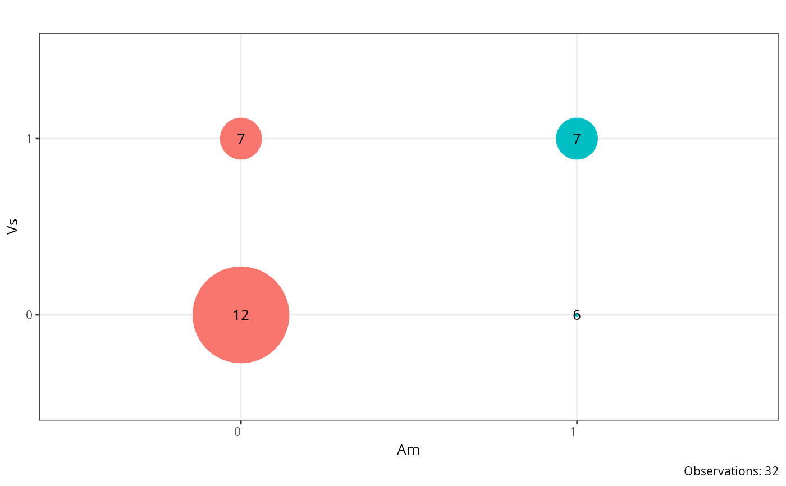
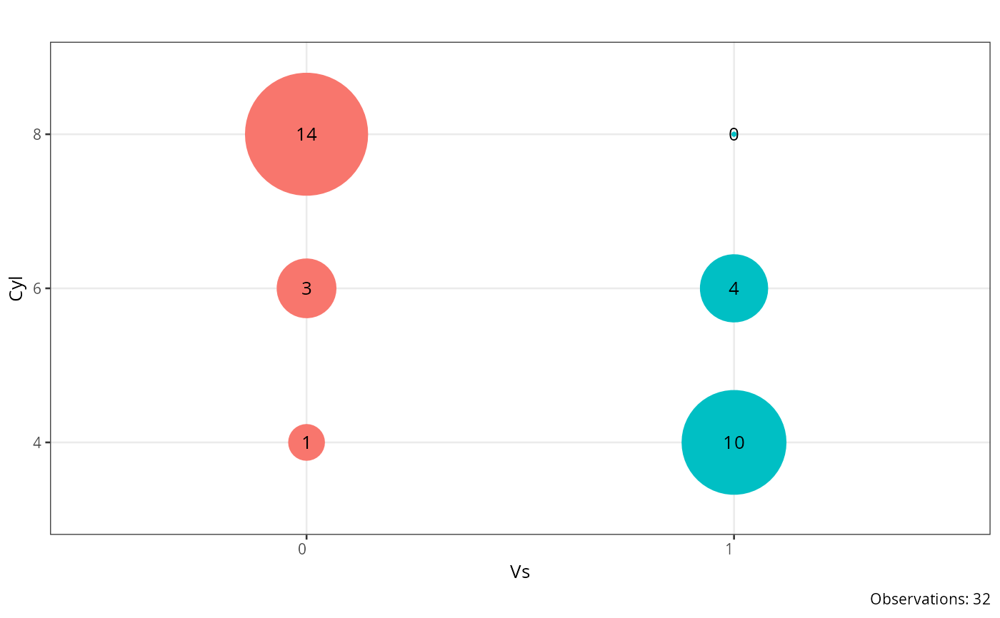
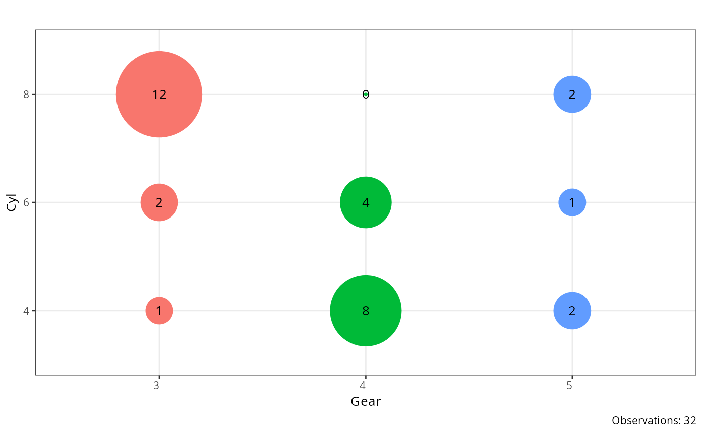

Creates a bubble (point) plot for each pair of categorical
variables where point size encodes cell frequency and point colour
encodes the levels of the first variable. Variable pairs can be supplied
explicitly via combinations, or generated automatically from all
unique pairs within factor_index. A progress bar is displayed
during computation.
Usage
plot_crosstable(
df,
factor_index,
combinations = NULL,
shape = 16,
angle = 0,
base_size = 10,
title = "",
pb = FALSE
)Arguments
- df
A data frame containing the variables to plot.
- factor_index
Integer vector of column indices. When
combinationsisNULL, all unique pairwise combinations of the selected columns are plotted (self-pairs and duplicate pairs are excluded).- combinations
A data frame with two character columns named
index1andindex2, each row specifying one variable pair to plot. Takes precedence overfactor_index.- shape
Integer specifying the ggplot2 point shape. Default is
16(filled circle).- angle
Numeric angle (in degrees) for x-axis tick labels. Default is
0.- base_size
Base font size passed to
theme_bw(). Default is10.- title
Character string used as the plot title. Default is
"".- pb
Logical; whether to display a progress bar in the console. Default is
FALSE.
Value
A named list of ggplot objects, one per variable pair. Each
element is named "var1_var2" and shows a bubble chart with cell
frequency as the point size, frequency counts as text labels, and total
observations in the caption. Variable pairs with zero total observations
are silently dropped.
Examples
combinations <- data.frame(index1 = c("vs", "am", "gear"),
index2 = c("cyl", "cyl", "cyl"))
plot_crosstable(df = mtcars, factor_index = 8:9)
#> $am_vs

#>
plot_crosstable(df = mtcars, combinations = combinations)
#> $vs_cyl

#>
#> $am_cyl
 #>
#> $gear_cyl
#>
#> $gear_cyl
 #>
plot_crosstable(df = mtcars, combinations = combinations, pb = TRUE)
#>
|
| | 0%
|
|=============================================================== | 33%
|
|=============================================================================================================================== | 67%
|
|==============================================================================================================================================================================================| 100%
#> $vs_cyl
#>
plot_crosstable(df = mtcars, combinations = combinations, pb = TRUE)
#>
|
| | 0%
|
|=============================================================== | 33%
|
|=============================================================================================================================== | 67%
|
|==============================================================================================================================================================================================| 100%
#> $vs_cyl
 #>
#> $am_cyl
#>
#> $am_cyl
 #>
#> $gear_cyl
#>
#> $gear_cyl

#>